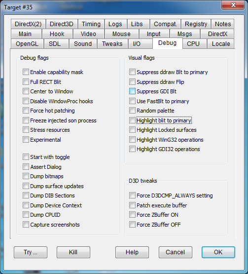

|
Enable capability mask |
CAPMASK |
|
|
Full RECT Blit |
FULLRECTBLT |
Causes every blit operation to primary surface to be applied to the full surface (NULL rect coordinates). It could be handy to recover wrong surface handling. |
|
Center to Window |
CENTERTOWIN |
|
|
Force D3DCMP_ALWAYS setting |
ZBUFFERALWAYS |
|
|
Force hot patching |
HOTPATCHALWAYS |
|
|
Freeze injected son process |
FREEZEINJECTEDSON |
|
|
Stress resources |
STRESSRESOURCES |
|
Start with toggle |
STARTWITHTOGGLE |
Initialize custom key toggle to active status. Checking this flag will turn all flagged Dump functions on from the start of hook with no need to press the custom key toggle. |
|
Assert Dialog |
ASSERTDIALOG |
|
|
Dump bitmaps |
DUMPBITMAP |
Debug utility making images of HBITMAP resources in bmp.out game folder. |
|
Dump DIB Sections |
DUMPDIBSECTION |
Debug utility making images of DIB resources in bmp.out game folder. Note: images of DIBs with negatve height will be up-side-down. |
|
Dump Device Context |
DUMPDEVCONTEXT |
|
|
Dump CPUID |
DUMPCPUID |
|
|
Capture screenshots |
CAPTURESCREENS |
|
Suppress ddraw Blt to primary |
NODDRAWBLT |
|
|
Suppress ddraw Flip |
NODDRAWFLIP |
|
|
Suppress GDI Blt |
NOGDIBLT |
|
|
Do not Blt to primary |
NOBLT |
|
|
Use FastBlt to primary |
DOFASTBLT |
|
|
Highlight blit to primary |
MARKBLIT |
|
|
Highlight Locked surfaces |
MARKLOCK |
|
|
Highlight WinG32 operations |
MARKWING32 |
|
|
Highlight GDI32 operations |
MARKGDI32 |
|
Patch execute buffer |
PATCHEXECUTEBUFFER |
|
|
Force ZBuffer ON |
FORCEZBUFFERON |
|
|
Force ZBuffer OFF |
FORCEZBUFFEROFF |